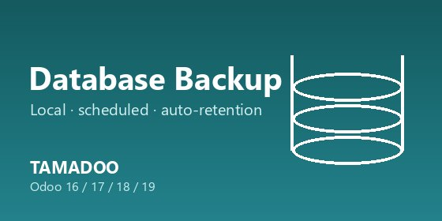
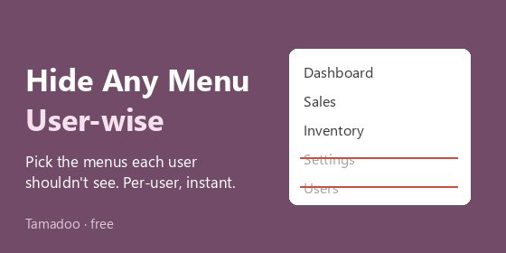
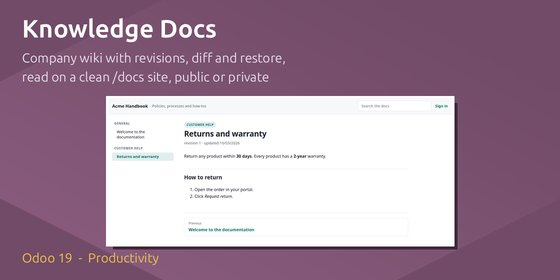

Productivity & Tools apps for Odoo
Odoo add-ons for backups, approvals, printing, menus, access and team knowledge. 13 apps, 6 free, for Odoo 16 to 20.
 Approval EngineMulti-level approval workflow on any model, without code: conditions, approval levels, field locking, signatures.
Approval EngineMulti-level approval workflow on any model, without code: conditions, approval levels, field locking, signatures. Database BackupScheduled database backups with odoo.sh-style retention and pluggable storage backends
Database BackupScheduled database backups with odoo.sh-style retention and pluggable storage backends Database Backup: Google DriveStore scheduled database backups in your Google Drive (OAuth)
Database Backup: Google DriveStore scheduled database backups in your Google Drive (OAuth)
Database Backup: Local FolderStore scheduled database backups in a local server folder Document AI (Chat with your files)Upload PDF/DOCX/TXT and chat with them. Grounded AI answers with cited sources (RAG powered by Google Gemini).
Document AI (Chat with your files)Upload PDF/DOCX/TXT and chat with them. Grounded AI answers with cited sources (RAG powered by Google Gemini). Document AI - WhatsAppAnswer WhatsApp messages from your documents. Connects Tamadoo Document AI to the WhatsApp Cloud API.
Document AI - WhatsAppAnswer WhatsApp messages from your documents. Connects Tamadoo Document AI to the WhatsApp Cloud API.
Hide Any Menu (User-wise)Hide selected menu items from specific users Hide Create / Delete / Export Options by ModelHide Create, Edit, Delete, Duplicate and Export options per model and group
Hide Create / Delete / Export Options by ModelHide Create, Edit, Delete, Duplicate and Export options per model and group
Knowledge Docs - Company Wiki with Revisions and a Public ReaderWrite your company documentation, how-tos and policies in Odoo: every change keeps a revision with a readable diff and one-click restore, and pages are read in a clean docs site for employees, portal users or anyone with the link. Open PDF Reports in BrowserOpen PDF reports in a new browser tab instead of downloading them
Open PDF Reports in BrowserOpen PDF reports in a new browser tab instead of downloading them Sequence Roman Month - 001/SO/IX/2026 NumberingUse the month (and day) as a Roman numeral in sequence prefixes and suffixes, e.g. 001/SO/IX/2026, for sales orders, purchase orders, transfers and every other document numbered by a sequence.
Sequence Roman Month - 001/SO/IX/2026 NumberingUse the month (and day) as a Roman numeral in sequence prefixes and suffixes, e.g. 001/SO/IX/2026, for sales orders, purchase orders, transfers and every other document numbered by a sequence. Silent Print - Direct Printing with QZ TrayPrint any Odoo report (PDF, ZPL, ESC/POS) straight to a local printer without the download / print dialog. Printer per report, user and workstation, through QZ Tray.
Silent Print - Direct Printing with QZ TrayPrint any Odoo report (PDF, ZPL, ESC/POS) straight to a local printer without the download / print dialog. Printer per report, user and workstation, through QZ Tray.- Telegram IntegrationManage sales, invoices, purchases and contacts from Telegram with real-time notifications